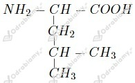
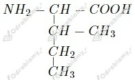

Obserwacje:
Wniosek: Glicyna reaguje zarówno z kwasem jak i zasadą w reakcjach zobojętniania.
Wzór tego aminokwasu możemy zapisać jako CxHyOzNv. Zaczynamy od obliczenia zawartości procentowej azotu:
Masa molowa węgla to 12 g/mol, wodoru 1 g/mol, tlenu 16 g/mol, zaś azotu 14 g/mol. Liczymy wartości indeksów x, y, z oraz v.
Wzór sumaryczny tego aminokwasu to
Zaczynamy od obliczenia masy roztworu:
Liczymy stężenie procentowe roztworu:
Odpowiedź: Stężenie procentowe nasyconego roztworu β-alaniny w temperaturze 20oC wynosi 8,17%.
Liczymy ile gramów glicyny może rozpuścić się w 150 g wody:
Liczymy ile gramów glicyny nie uległo rozpuszczeniu:
Odpowiedź: Rozpuszczeniu nie uległo 12,5 g glicyny.
Zaczynamy od obliczenia ilości moli glicyny w roztworze:
Liczymy masę glicyny:
Odpowiedź: W roztworze znajduje się 3,75 g glicyny.
Wzory strukturalne α-aminokwasów o wzorze sumarycznym C6H13O2N to:
1.

2.

Zaczynamy od obliczenia masy wody:
Liczymy masę roztworu:
Liczymy stężenie poszczególnych aminokwasów:
Odpowiedź: Stężenia poszczególnych aminokwasów w otrzymanym roztworze suplementu diety to 10% dla leucyny, 5% dla izoleucyny oraz 5% dla waliny.
Substancje zawierające wiązanie peptydowe to b oraz e .
wyjaśnienie: wiązanie peptydowe ma postać CO-NH.